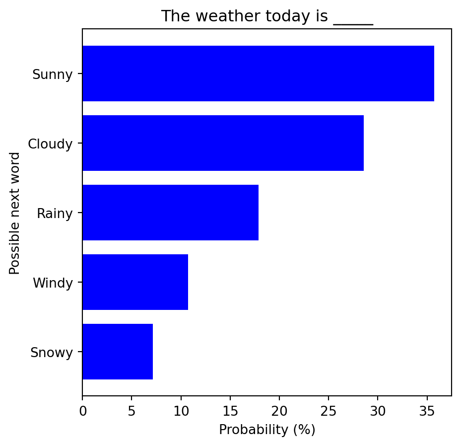

For my report, I decided to use the alpaca.cpp and try to explore it a little bit more. Specifically, we look at the different parameters that were used in this language model. For example, temperature is a hyper-parameter used in language model and is often used to control smoothness of a probability distribution of predicted words (Wang et al. 2020). When we have a temperature approaching infinity, the distribution becomes uniform and when temperature approaches zero, we get a dirac-delta looking distribution. We can think of is as if we have high temperature, the answers that our chat AI gives becomes varied uniform, but if we have a low temperature, we get one answer almost, if not all, the time.
Default parameters of alpaca.cpp
Here are the parameters that we can actually control in the alpaca.cpp language model. We see that there are actually multiple hyper-parameters that we can try to vary and study its effects. For this report, let us just look at the effects of few parameters.
-s SEED, --seed SEED RNG seed (default: -1)
-t N, --threads N number of threads to use during computation (default: 4)
-p PROMPT, --prompt PROMPT
prompt to start generation with (default: random)
-f FNAME, --file FNAME
prompt file to start generation.
-n N, --n_predict N number of tokens to predict (default: 128)
--top_k N top-k sampling (default: 40)
--top_p N top-p sampling (default: 0.9)
--repeat_last_n N last n tokens to consider for penalize (default: 64)
--repeat_penalty N penalize repeat sequence of tokens (default: 1.3)
-c N, --ctx_size N size of the prompt context (default: 2048)
--temp N temperature (default: 0.1)
-b N, --batch_size N batch size for prompt processing (default: 8)
-m FNAME, --model FNAME
model path (default: ggml-alpaca-7b-q4.bin)
Varying the temperature
Using a low value (temp = 0.01) and a high value (temp = 0.9) for temperature , let us ask alpaca.cpp to describe the color red in three sentences (Thank you ChatGPT for the prompt!). Here are the first five outputs of the model.
Describe the color red in three sentences. {tbl-colwidths=“[50,50]”}
Temperature = 0.01
Temperature = 0.9
The color red is often associated with energy, passion and intensity. It can be a bold choice for decorating an entire room or simply adding pop of color to accessories like throw pillows or rugs. Its warmth makes it perfect for creating cozy spaces that invite comfort and relaxation.
The color red is often associated with energy and vitality. Its intensity can be both invigorating and intimidating at times - it’s a striking hue that makes an indelible statement wherever it is used. Red has long been known to symbolize courage, strength and determination; qualities we admire in people as well as objects around us.
The color red is often associated with energy, passion and intensity. It can be a bold choice for decorating an entire room or simply adding pop of color to accessories like throw pillows or rugs. Its warmth makes it perfect for creating cozy spaces that invite comfort and relaxation.
Red is a vibrant hue with strong associations - it’s often seen as an expression of passion, energy and courage. In some cultures, it can also symbolize power, strength, and determination. Its warmth makes it ideal for creating a cozy atmosphere in homes or restaurants, while its intensity lends itself to making statements when used on clothing or products.
The color red is often associated with energy, passion and intensity. It can be a bold choice for decorating an entire room or simply adding pop to accessories like throw pillows or rugs. Its warmth makes it perfect for creating cozy spaces that invite comfort and relaxation.
Red is often seen as an expresison of passion and energy due to its warmth and vibrancy. It’s also associated with courage, strenght, determiantion and a few other things related to raw power and emotion. Red can be used on clothing and products to make statements about the person wearing it (or using them) - whether they are bold, confident, daring and so much more!
The color red is often associated with energy, passion and intensity. It can be a bold choice for decorating an entire room or simply adding pop to accessories like throw pillows or rugs. Its warmth makes it perfect for creating cozy spaces that invite comfort and relaxation.
The color red has associations with energy, passion and intensity. It can evoke feelings of warmth and excitement as well as alertness and danger. Red is a vibrant ue that stands out from other colors due to its brightness and intensity.
The color red is often associated with energy, passion and intensity. It can be a bold choice for decorating an entire room or simply adding pop to accessories like throw pillows or rugs. Its warmth makes it perfect for creating cozy spaces that invite comfort and relaxation.
Red is often associated with energy, passion, and excitement. It’s also known for being attention-grabbing and can evoke strong emotions depending on how it’s used. Red evokes warmth and a sense of vibrancy that makes it the percent accent color to any design.
We see from the table above, just from the first five results the difference in the results of alpaca.cpp language model if we vary the temperature. We see that for low temperature results, the results are repetitive and that the sentences formed are not that ‘creative’. On the other hand, the results produced by high temperature are more varied and more creative - that is the sentences formed are more “imaginatively” written.
Key idea: We see here that a balance of temperature will basically control the level of ‘randomness’ of the results. Now, to make this study more quantitative, its nice to make a measure of creativity.
Varying the top-p
Now there are two parameters that can also greatly affect the ouput of our language model and these are the top_k and top_p parameters. So given a list of possible next words in a fill in the blank type of sentence, ordered from highest to lowest probability of being chosen, the top_k and top_p parameters control the ‘cut-off’ of which words will be considered in the final list of possible words (Holtzman et al. 2020).
I think this is better to be presented using visuals. Suppose we have the prompt “The weather today is ___” and we have 5 possible next words, ordered in decreasing probability of being the actual next word.
Code
import numpy as npimport matplotlib.pyplot as pltweather_conditions = ['Sunny', 'Cloudy', 'Rainy', 'Windy', 'Snowy']frequency = [10, 8, 5, 3, 2]frequency_norm = np.array(frequency)/sum(frequency)sorted_data =sorted(zip(frequency_norm *100, weather_conditions))sorted_frequency, sorted_weather_conditions =zip(*sorted_data)fig, ax = plt.subplots(figsize=(5, 5))ax.barh(sorted_weather_conditions, sorted_frequency, color ='blue')ax.set_xlabel('Probability (%)')ax.set_ylabel('Possible next word')ax.set_title('The weather today is _____')plt.show()

Now if we set top_k = 2, that means that we will only consider the top 2 words which are Sunny and Cloudy. A top_k = 1 value means that the language model deploys some sort of greedy algorithm where only the top answer is considered as the best answer. On the other hand, if we set top_p = 0.8, that means that we are only considering the words whose sum of probabilities are greater than the set value of top_p, which in our case are Sunny, Cloudy and Rainy.
So we see from the discussion above that aside from temperature, top-k and top-p values are also need to be considered when tweaking the language model.
References
Holtzman, Ari, Jan Buys, Li Du, Maxwell Forbes, and Yejin Choi. 2020. “The Curious Case of Neural Text Degeneration.”https://arxiv.org/abs/1904.09751.
Wang, Pei-Hsin, Sheng-Iou Hsieh, Shih-Chieh Chang, Yu-Ting Chen, Jia-Yu Pan, Wei Wei, and Da-Chang Juan. 2020. “Contextual Temperature for Language Modeling.”https://arxiv.org/abs/2012.13575.